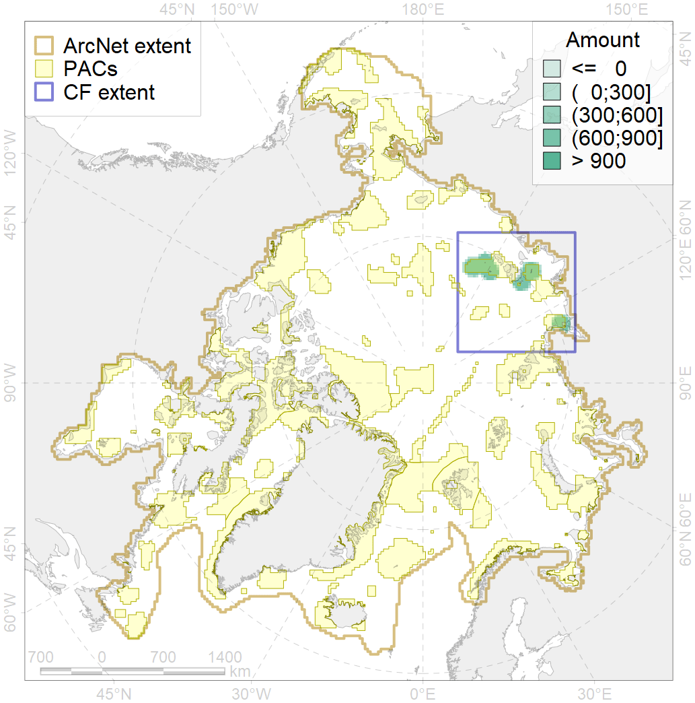
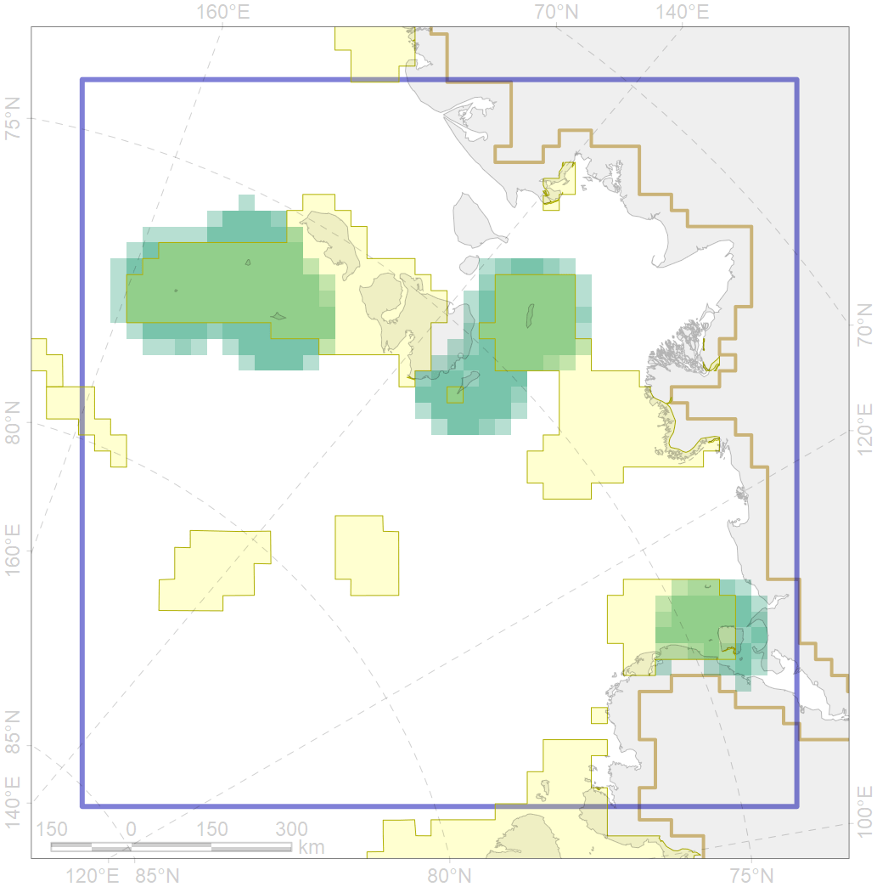

6104

| CF ID | 6104 |
| CF Name | Thick-billed murre (Uria lomvia eleonorae) breeding colonies buffer feeding area |
| Time Period | 1950-2012 |
| Source(s) | Kolodeznikov 2013, Gavrilo et al 2011 |
| Seasonality | May-September |
| Depth Horizon | ≥0 m |
| Methodology | Buffer around colonies |
| Author Name | Gavrilo, Tertitski |
| Notes | |
| Conservation Target Set in the Scenario | 0.36 |
| Conservation Target Achieved in the Scenario | 0.635 (Scenario: 176.3%) |
| PAC ID | Proportion in the PAC | Contribution to ArcNet Target Achievement | PAC’s Contribution to the Achieved Target |
|---|---|---|---|
| 11 | 36.1% | 95.4% | 54.1% |
| 12 | 16.9% | 40.3% | 22.8% |
| 13 | 9.3% | 24.1% | 13.7% |
| inner | 62.3% | 159.8% | 90.6% |
| outer | 37.7% | 16.5% | 9.4% |